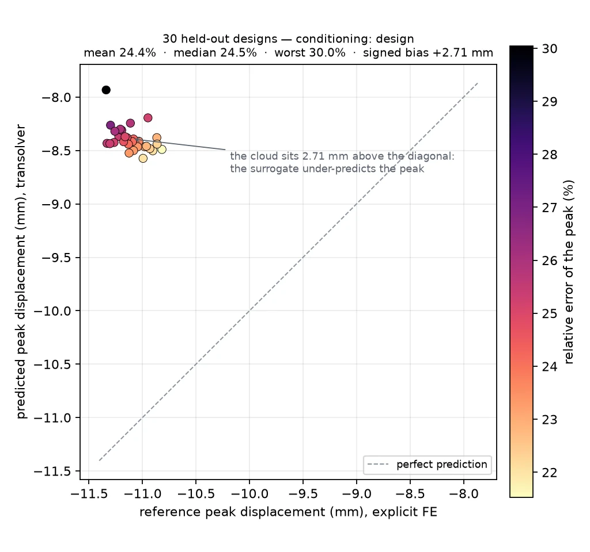
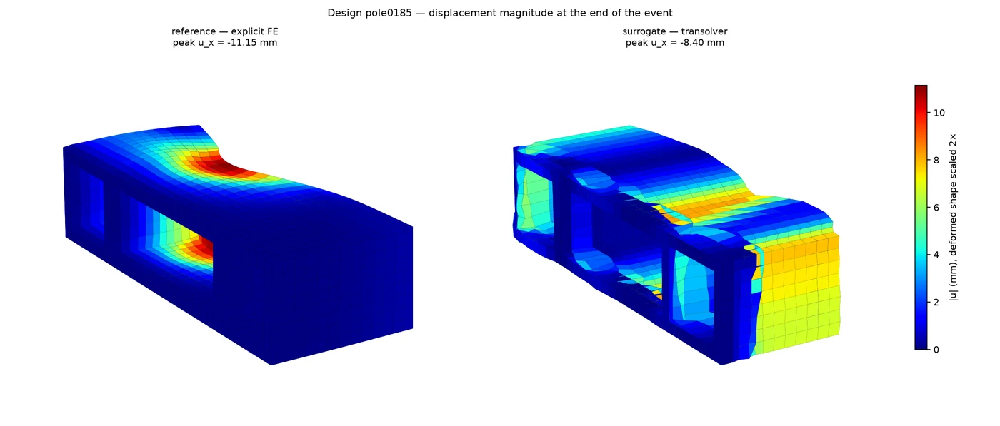

Um operador neural pode prever o deslocamento de pico de um crash sem rodar o crash. O exercício que motivou este texto fez exatamente isso com dados de OpenRadioss e um Graph Neural Operator do PhysicsNeMo, e acertou 3,5% num projeto held-out. A pergunta aqui é a mesma; o que muda é de onde vêm os dados — do solver de crash explícito da própria biblioteca, num cupom que roda num laptop.
O caso
Uma viga de para-choque DP1000 apoiada em duas crash boxes DP600, lançada contra um poste rígido: é a metade de componente de um programa de crash. Sete variáveis de projeto — velocidade de impacto (50 a 64 km/h), as duas espessuras de parede, os dois limites de escoamento, o raio do poste e o seu deslocamento lateral. A malha é fixa, com 2.783 nós e 1.480 elementos hexaédricos, e 200 projetos foram resolvidos pelo solver explícito (plasticidade J2, contato penalizado), 0,8 ms de evento em nove quadros cada.
O que a rede vê
Por nó: as três coordenadas, o rótulo de parte (a viga e as duas caixas) e a espessura. Por quadro: o tempo. Por projeto: as sete variáveis, mapeadas para [0, 1] dentro da própria faixa e repetidas em todos os nós. Essa última parte é o que torna o modelo paramétrico. Como a malha não muda entre projetos — é isso que permite comparar nó a nó —, a geometria sozinha não distingue um projeto do outro: sem o vetor de projeto, a rede vê 200 vezes o mesmo conjunto de pontos.
Os números
O erro relativo L2 do campo de deslocamento, médio sobre os 30 projetos fora do treino, fica em 0,28 (intervalo de confiança de 95%: 0,27 a 0,29). O deslocamento de pico — o menor deslocamento na direção do impacto, sobre todos os nós e quadros — sai com 24,4% de erro médio, mediana de 24,5% e pior caso de 30,0%. No projeto pole0185, a referência dá -11,15 mm e o surrogate, -8,40 mm. O erro não é ruído: é viés. A nuvem de pontos fica acima da diagonal em todos os 30 projetos — o modelo acerta qual projeto esmaga mais e quanto, mas subestima a magnitude do pico em cerca de 2,7 mm, que é o que se espera de um regressor que suaviza.

Sem o vetor de projeto não há resposta
O mesmo Transolver, com o mesmo orçamento de treino, o mesmo split e o mesmo conjunto de nós, mas sem as sete variáveis, fica em 41,7% de erro médio no pico (erro de campo 0,76 contra 0,28). Não é um modelo pior: é um modelo sem a informação. Ele converge para o campo médio dos projetos de treino, porque nada no que recebe diz qual projeto está sendo pedido — e é essa a diferença entre interpolar a base e responder por um projeto novo.
Quanto custa
O solver leva cerca de 3,7 minutos por projeto (medido: 223 s para 1.519 passos em 1 ms de evento, um processo). O surrogate tem 0,64 milhão de parâmetros e infere um projeto inteiro em 197 ms, medido no mesmo benchmark. Não é 'mil vezes mais rápido numa GPU': é o que permite varrer o espaço de projeto antes de escolher quais simulações pagar.

O que não está medido
O cupom é de componente e a malha é grosseira para um crash real; a espessura entra pela tensão de escoamento numa malha fixa, o que subestima flexão; o erro é contra o próprio solver, não contra ensaio; e o pico é lido nos 900 nós retidos, os mesmos para todos os modelos — o que não muda o ranking, mas muda o número. Nada aqui é certificação: é o protocolo, com os limites ao lado.
Por que publicar
Porque o resultado útil não é o número do surrogate, é o que ele permite decidir: com o vetor de projeto dentro do modelo, um projeto novo custa 197 ms em vez de minutos de solver, e o erro vem com intervalo. O resto — inclusive o run sem as variáveis, que vai a 41,7% — está no repositório, no mesmo exemplo que gerou as figuras.